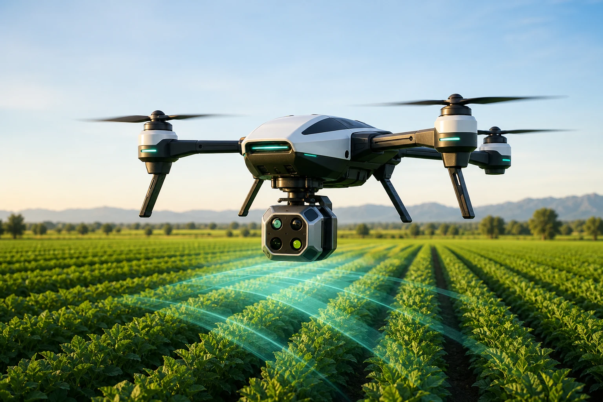

Low-altitude autonomous inspection
W10 Agricultural Inspection Drone
Designed for autonomous low-altitude inspection in greenhouses and orchards, combining visual positioning, LiDAR sensing and AI analysis for crop maturity, pests, disease and bagging coverage.
GPS-independent flight
360° LiDAR avoidance
Up to 25 min
5 km radius
Maturity & yield analysis
Pest & disease recognition
Autonomous route planning
Unified farm management platform